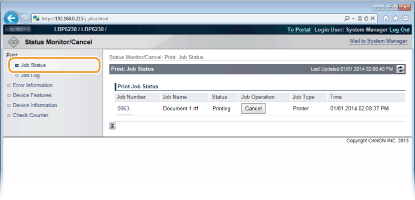
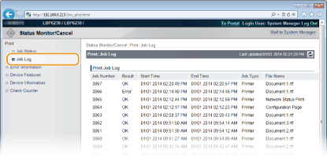
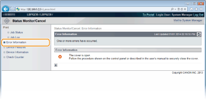
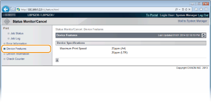
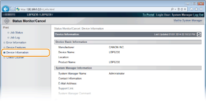

Managing Documents and Checking the Machine Status
|
|
|
The name of the application that requested printing may be added to the file name of printed documents.
|
Checking the Current Status of Print Documents
You can check a list of up to five documents that are currently printing or waiting to be printed.

You can click [Cancel] to delete the print job for a document that is currently printing or waiting to be printed.
|
|
|
Click [Job Number] to display detailed information about a document. For example, you can check the user name and the print page count of the document.
If an error occurs, but printing can continue nevertheless, [Continue/Retry] appears in [Job Operation]. You can click [Continue/Retry] to clear the error and resume printing. However, the printing may not be performed properly if you use the Continue/Retry function to clear the error and resume printing.
|
Checking the History of Printed Documents
The history displays a list of up to 50 printed documents.

Checking Error Information
When an error occurs, you can display this page by clicking the message displayed under [Error Information] on the Portal Page (main page). Portal Page (Main Page)

Checking the Maximum Print Speed
This page displays the maximum print speed of the machine.

Checking System Manager Information
This page displays information about the machine and the system manager. This information is set in [System Management] on the [Settings/Registration] page (Changing Machine Settings).

Viewing the Page Counter Value
This page displays a total page count of the documents that have been printed.